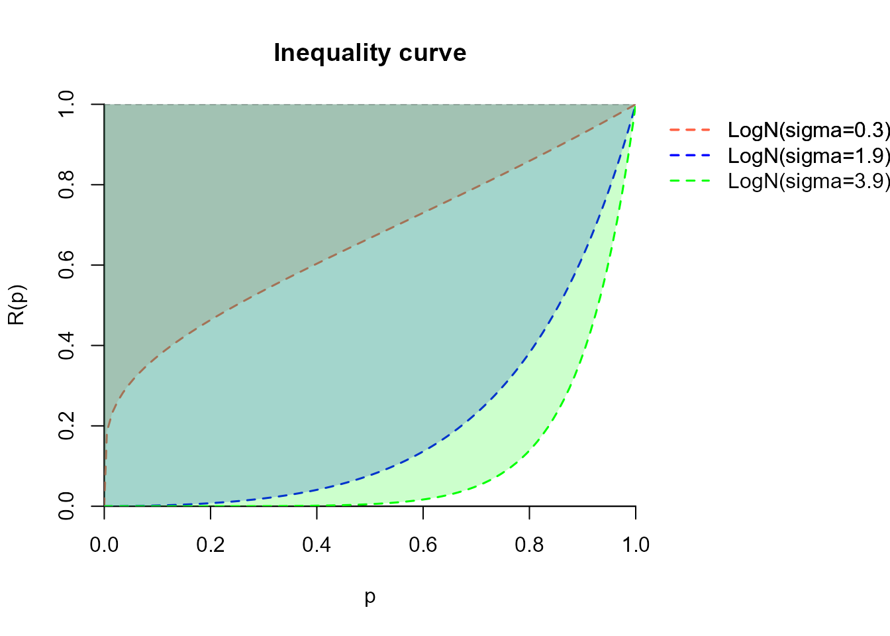
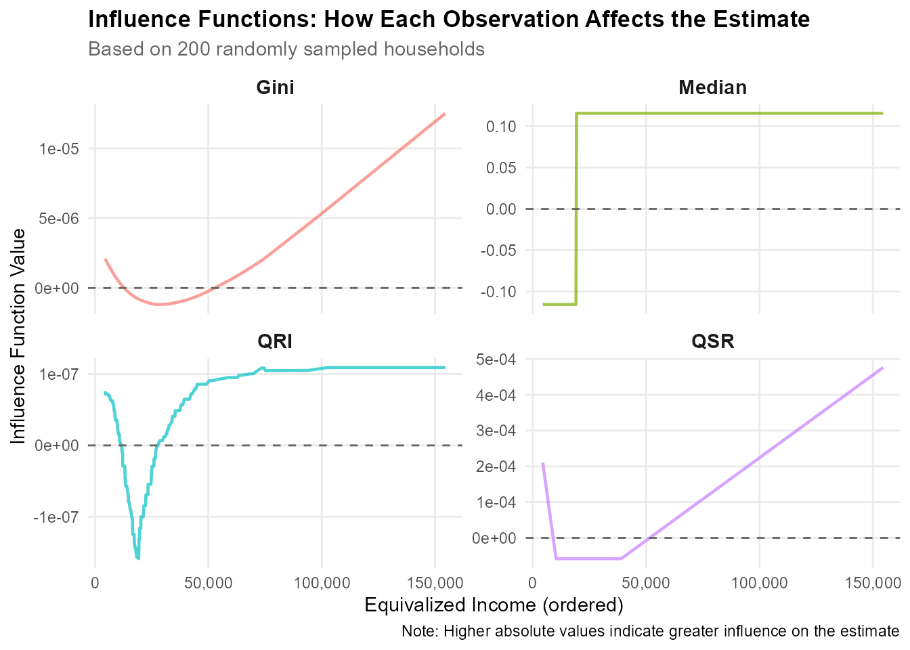

Introduction to inequantiles: Quantile-Based Inequality Measures for Survey Data
Silvia Scarpa
2026-04-14
Source:vignettes/inequantiles-intro.Rmd
inequantiles-intro.RmdOverview
The inequantiles package provides tools for estimating quantiles and quantile-based economic inequality indicators from survey data, with full support for complex sampling designs.
The package offers comprehensive methods for:
- Quantile ratio index (QRI): Estimation on superpopulations, complex survey data,and grouped data
- Traditional quantile-based indicators: Quintile share ratio (QSR), Palma ratio, and percentile ratios (e.g., P90/P10), with flexible quantile estimator selection
- Weighted quantile estimation: Estimation of quantiles choosing among multiple interpolation rules (types 4-9 plus HD) on complex sampling data
- Linearization techniques: Estimation of nfluence function for QRI, QSR, Gini coefficient and quantiles
- Grouped data support: Estimation of quantiles, QRI and Gini coefficient from frequency tables and grouped data when microdata are unavailable (e.g., fiscal data)
- Sampling variance estimation for the cited indicators via rescaled bootstrap method
All functions are demonstrated using synthetic survey data included in the package.
Installation
# Install from GitHub
devtools::install_github("silviascarpa/inequantiles")Import synthetic survey data
The dataset synthouse was synthetically generated to mimic typical survey dataset like Italian EU-SILC. It contains basic information at the individual and household level, including geographical information, sampling weights and equivalised disposable income.
data(synthouse)
head(synthouse)
#> person_id hh_id NUTS1 NUTS2 NUTS3 municipality age age_class gender
#> 1 HH000001P1 HH000001 N N01 N01005 N010050010 39 35-49 1
#> 2 HH000001P2 HH000001 N N01 N01005 N010050010 38 35-49 2
#> 3 HH000001P3 HH000001 N N01 N01005 N010050010 15 15-17 1
#> 4 HH000001P4 HH000001 N N01 N01005 N010050010 13 0-14 2
#> 5 HH000002P1 HH000002 NE NE06 NE06004 NE060040007 37 35-49 2
#> 6 HH000003P1 HH000003 N N05 N05003 N050030007 54 50-64 2
#> education_level employment_status hh_size hh_type eq_income hh_income
#> 1 Low Employed 4 Family 10430.70 23990.61
#> 2 Medium Employed 4 Family 10430.70 23990.61
#> 3 <NA> Student 4 Family 10430.70 23990.61
#> 4 <NA> Student 4 Family 10430.70 23990.61
#> 5 Medium Employed 1 Single 36588.27 36588.27
#> 6 Low Employed 2 Couple 13390.50 20085.75
#> oecd_scale weight
#> 1 2.3 83.66134
#> 2 2.3 83.66134
#> 3 2.3 83.66134
#> 4 2.3 83.66134
#> 5 1.0 167.24423
#> 6 1.5 1419.28854Theoretical Background
Unlike moment-based inequality indicators (e.g., the Gini coefficient), which are highly sensitive to large values in the long tails, indicators which are based solely on quantiles are remarkably resistant to anomalous observations and high skewness.
The core of the inequantiles package is the quantile ratio index (QRI), an indicator that provides a robust measure of inequality, even in small samples. It considers the entire distribution and is solely based on quantiles.
The Quantile Ratio Index (QRI)
The QRI was introduced by Prendergast and Staudte (2018) as a simple, effective inequality measure. The QRI
- Considers the entire distribution
- Depends solely on quantiles
- Is robust to extreme values
- Does not require a priori choice of specific percentiles
For a continuous random variable with cdf and quantile function , define the ratio between symmetric quantiles as:
The QRI is then defined as:
The QRI ranges from 0 (perfect equality) to 1 (maximum inequality). It measures the area between the equi-distribution line ( for all ) and the actual inequality curve. This can be easily visualised in the following plots:
### Log-Normal distribution
plot_inequality_curve(qfunction = qlnorm, qfun_args = list(meanlog = 9, sdlog = 0.3),
col = "tomato", lty = 2, label = "LogN(sdlog=0.3)")
plot_inequality_curve(qfunction = qlnorm, qfun_args = list(meanlog = 9, sdlog = 1.9),
col = "blue", lty = 2, add = TRUE, label = "LogN(sdlog=1.9)")
plot_inequality_curve(qfunction = qlnorm, qfun_args = list(meanlog = 9, sdlog = 3.9),
col = "green", lty = 2, add = TRUE, label = "LogN(sdlog=3.9)")
For superpopulation models defined by theoretical parametric distributions with known quantile functions, you can compute the exact QRI a:
# Log-normal distribution
superpop_qri(qfunction = qlnorm, meanlog = 9, sdlog = 0.2)
#> [1] 0.2534457
superpop_qri(qfunction = qlnorm, meanlog = 9, sdlog = 1.7)
#> [1] 0.7818321
superpop_qri(qfunction = qlnorm, meanlog = 9, sdlog = 3.2)
#> [1] 0.8781747
# Weibull distribution
superpop_qri(qfunction = qweibull, shape = 2, scale = 30000)
#> [1] 0.522862
superpop_qri(qfunction = qweibull, shape = 1.5, scale = 30000)
#> [1] 0.6003122Consider now a finite population , from which a random sample of size is selected. Let , , be the observed values of the variable of interest, with denoting its order statistics. Assume that the sample is drawn according to a certain sampling scheme, with inclusion probability . The corresponding sampling weight is obtained by the inversion of the inclusion probability, plus, when required, some adjustments for non-response and calibration. Let denote the cumulative sum of weights up to ordered observation . Let be the quantile estimator; how to estimate the quantiles on complex sampling data will be treated in the following sections. For survey data from a finite population, Scarpa, Ferrante, and Sperlich (2025) approximate the QRI integral using a grid of points as
where . By default, .
qri(y = synthouse$eq_income, weights = synthouse$weight, M = 100)
#> [1] 0.5690895is strictly sensitive to the choice of the quantile estimator, especially in small samples.
Quantile estimators
The quantile estimator can be expressed as a weighted average of order statistics,
where indicates the estimator of the cdf, namely the plotting position, and the selected order is such that , where is determined by the interpolation method between adjacent data points. Linear interpolation between the points gives a quantile estimator for complex sampling data. For and , define and .
Thecsquantile() function extends standard quantile
estimation through the R function quantile() to survey
data. It adapts the methods described in Hyndman
and Fan (1996) to weighted
data. The possible interpolation rules are summarised in the table below
(see Scarpa, Ferrante, and Sperlich (2025) for further details):
| Estimator | |||
|---|---|---|---|
| 0 | |||
# Compute weighted quartiles
csquantile(y = synthouse$eq_income,
weights = synthouse$weight,
probs = c(0.25, 0.5, 0.75),
type = 4)
#> 25% 50% 75%
#> 12353.29 20014.13 32222.45
csquantile(y = synthouse$eq_income,
weights = synthouse$weight,
probs = c(0.25, 0.5, 0.75),
type = 7)
#> 25% 50% 75%
#> 12353.29 20019.77 32224.95
# Compare without considering the sampling weights
csquantile(synthouse$eq_income, probs = c(0.25, 0.5, 0.75), type = 4)
#> 25% 50% 75%
#> 12910.30 20428.45 32528.88An extension of the Harrell-Davis estimator to survey data is also provided, as , where
# Harrell-Davis weighted median
csquantile(y = synthouse$eq_income,
weights = synthouse$weight,
probs = 0.5,
type = "HD")
#> 50%
#> 20017.37Differences among the quantle estimators are particularly evident in small samples and in the distribution tails, as demonstrated in the following example:
# Compare different quantile types by NUTS3
types <- c(4, 5, 6, 7, 8, 9, "HD")
areas <- unique(synthouse$NUTS3)
# Function to compute QRI for all types in one area
compare_quantiles <- function(region_code, data = synthouse) {
idx <- which(data$NUTS3 == region_code)
results <- sapply(types, function(t) {
csquantile(y = data$eq_income[idx],
weights = data$weight[idx],
type = t,
probs = 0.95)
})
return(results)
}
# Compute for all areas
results_quantiles <- sapply(areas, compare_quantiles)
rownames(results_quantiles) <- types
colnames(results_quantiles) <- areas
## === Quantile estimators for Each NUTS3 Region ==="
print(head(t(results_quantiles), n = 10))
#> 4 5 6 7 8 9 HD
#> N01005 70988.83 75538.32 87604.07 69761.89 80343.39 79093.40 76388.02
#> NE06004 50988.47 50988.47 50988.47 50992.05 50988.47 50988.47 50988.47
#> N05003 81116.08 82948.72 81211.01 83560.96 82496.53 82633.53 81370.54
#> NE06002 47742.34 47749.81 47749.81 47749.81 47749.81 47749.81 47749.81
#> N02004 52599.79 53137.63 52644.75 53559.00 52883.63 52956.29 52818.39
#> NO02004 66674.78 66674.78 67773.72 61032.04 66904.21 66771.79 66674.78
#> NO03002 67724.83 71393.13 71459.35 71351.81 71411.51 71406.64 72491.41
#> N06004 45313.69 45317.87 45313.69 45706.20 45313.69 45313.69 45313.69
#> NE02004 57268.49 57299.09 57303.00 57297.80 57299.86 57299.64 57279.50
#> S04005 58411.94 62602.84 60288.65 62670.74 61561.74 61786.33 62670.69The package supports multiple quantile estimation methods (types 4-9
and Harrell-Davis) into quantile-based inequality indicators estimators.
Rule type = 6is recommended for the QRI, as it is been
shown by Scarpa, Ferrante, and Sperlich (2025) to lead to the least
biased estimates.
# Compute weighted QRI
qri(y = synthouse$eq_income,
weights = synthouse$weight,
type = 6) # Type 6 quantile estimator (default)
#> [1] 0.5690895Differences in estimation are more evident in small samples:
# Compare different quantile types by NUTS3
types <- c(4, 5, 6, 7, 8, 9, "HD")
areas <- unique(synthouse$NUTS3)
# Function to compute QRI for all types in one area
compare_qri <- function(region_code, data = synthouse) {
idx <- which(data$NUTS3 == region_code)
results <- sapply(types, function(t) {
qri(y = data$eq_income[idx],
weights = data$weight[idx],
type = t)
})
return(results)
}
# Compute for all areas
results_qri <- sapply(areas, compare_qri)
rownames(results_qri) <- types
colnames(results_qri) <- areas
# === QRI by Quantile Type for Each NUTS3 Region ===
print(head(t(results_qri), n = 10))
#> 4 5 6 7 8 9 HD
#> N01005 0.5949780 0.5942985 0.5963463 0.5930279 0.5948852 0.5947540 0.5937224
#> NE06004 0.6027608 0.6029655 0.6035349 0.6023394 0.6032227 0.6031437 0.6021197
#> N05003 0.5796526 0.5817831 0.5806345 0.5823600 0.5815257 0.5815893 0.5810594
#> NE06002 0.4633240 0.4641063 0.4637624 0.4647093 0.4640727 0.4641066 0.4641930
#> N02004 0.4772340 0.4757844 0.4776209 0.4744547 0.4763412 0.4762049 0.4761747
#> NO02004 0.5149638 0.5130350 0.5162534 0.5096980 0.5142736 0.5139116 0.5126820
#> NO03002 0.5633048 0.5622163 0.5663644 0.5582589 0.5635166 0.5631801 0.5619292
#> N06004 0.6269838 0.6261242 0.6278492 0.6246125 0.6266669 0.6265087 0.6254449
#> NE02004 0.6158412 0.6147918 0.6166331 0.6131734 0.6154180 0.6152612 0.6161466
#> S04005 0.5889493 0.5895140 0.5894409 0.5893739 0.5894665 0.5894842 0.5890552QRI estimator sampling variance
For complex surveys, the rescaled bootstrap method (Rao and Wu 1988; Rao, Wu, and Yue 1992) is recommended for the estimation of the QRI estimator sampling variance, as demonstrated by Scarpa, Ferrante, and Sperlich (2025). This can be easily estimated on data collected through two-stage stratified sampling design as
# Pseudo-code for rescaled bootstrap for the estimation of the sampling variance of the QRI estimator
var_qri <- rescaled_bootstrap(
data = synthouse,
y = "eq_income",
strata = "NUTS2",
psu = "municipality",
weights = "weight",
estimator = qri,
by_strata = TRUE,
B = 100,
seed = 456)Other Inequality Indicators
Most common quantile-based inequality indicators in the literature are the quintile share ratio (QSR), the Palma ratio and the interdecile ratios.
Quintile Share Ratio (QSR)
The QSR compares the income share of the top 20% to the bottom 20%. Its estimator is defined as
# Compute QSR
qsr(y = synthouse$eq_income,
weights = synthouse$weight, type = 4)
#> [1] 7.023932Palma Ratio
The Palma ratio compares the top 10% to the bottom 40% aggregated income:
# Compute Palma ratio
palma_ratio(y = synthouse$eq_income,
weights = synthouse$weight, type = 7)
#> [1] 1.578482Percentile Ratios
Very often National Statistical Offices measure inequality using ratios between percentiles, for example:
Default the P90/P10 is estimated.
# P90/P10 ratio
ratio_quantiles(y = synthouse$eq_income,
weights = synthouse$weight,
type = 7)
#> P90/P10
#> 5.918233
# P75/P25 ratio
ratio_quantiles(y = synthouse$eq_income,
weights = synthouse$weight,
prob_numerator = 0.75,
prob_denominator = 0.25, type = 6)
#> P75/P25
#> 2.60845Comparing Indicators Across Groups
Multiple inequality indicators exist in the literature, each capturing different aspects of the income distribution. Different indicators may provide complementary perspectives on inequality, so researchers should choose the most appropriate measure based on their specific research questions and the distributional features of interest.
The inequantiles() function computes all quantile-based
indicators at once, or any subset of them, among QRI, QSR, Palma ratio
and interquantiles ratio.
# Compare all indicators
inequantiles(y = synthouse$eq_income,
weights = synthouse$weight,
indicators = "all")
#> Quantile-based inequality indicators
#> -------------------------------------
#> Estimate
#> qri 0.5691
#> qsr 7.0161
#> palma 1.5787
#> p90p10 5.9206Standard errors can be obtained via the rescaled bootstrap by setting
se = TRUE. Note that this requires specifying the survey
design variables (strata, and optionally psu
and N_h).
# Standard errors for one region via rescaled bootstrap
nord <- synthouse[synthouse$NUTS1 == "N", ]
inequantiles(
y = nord$eq_income,
weights = nord$weight,
indicators = c("qri", "qsr"),
se = TRUE,
data = nord,
strata = "NUTS2",
psu = "municipality",
B = 200,
seed = 42
)Linearization techniques via influence function
The package provides linearization methods using the influence function estimation for some measures.
The quantile estimator influence function (IF) is measured in Osier (2009) as where .
The QSR estimator IF, as demonstrated by Langel and Tillé (2011), can be computed as
where .
Scarpa, Ferrante, and Sperlich (2025) demonstrated that the QRI IF can be estimated as
The Gini coefficient IF can be approximated as (see Langel and Tillé (2013)) as
Comparison of the influence function values
# Select a subset for clearer visualization
n_obs <- 200
set.seed(123)
idx <- sample(nrow(synthouse), n_obs)
# Extract data
y_subset <- synthouse$eq_income[idx]
w_subset <- synthouse$weight[idx]
# Order income values (for ease of representation, see the plots later)
order_idx <- order(y_subset)
y_ordered <- y_subset[order_idx] # Order the data
w_ordered <- w_subset[order_idx]
# Compute the IF for some indicators
if_gini_vals <- if_gini(y_ordered, w_ordered)
if_qri_vals <- if_qri(y_ordered, w_ordered, type = 6)
if_qsr_vals <- if_qsr(y_ordered, w_ordered, type = 4)
if_q50_vals <- if_quantile(y_ordered, w_ordered, probs = 0.5, type = 6)
# Create the plot
library(ggplot2)
#> Warning: package 'ggplot2' was built under R version 4.4.3
library(scales)
#> Warning: package 'scales' was built under R version 4.4.3
#
plot_df <- data.frame(
Income = rep(y_ordered, 4),
IF_Value = c(
if_qri_vals, # ← Già ordinato
if_qsr_vals, # ← Già ordinato
if_gini_vals, # ← Già ordinato
if_q50_vals # ← Già ordinato
),
Indicator = rep(c("QRI", "QSR", "Gini", "Median"), each = n_obs)
)
ggplot(plot_df, aes(x = Income, y = IF_Value, color = Indicator)) +
geom_line(linewidth = 0.8, alpha = 0.7) +
geom_hline(yintercept = 0, linetype = "dashed", color = "gray40") +
facet_wrap(~ Indicator, scales = "free_y", ncol = 2) +
scale_x_continuous(labels = scales::comma) +
labs(
title = "Influence Functions: How Each Observation Affects the Estimate",
subtitle = paste("Based on", n_obs, "randomly sampled households"),
x = "Equivalized Income (ordered)",
y = "Influence Function Value",
caption = "Note: Higher absolute values indicate greater influence on the estimate"
) +
theme_minimal(base_size = 11) +
theme(
legend.position = "none",
strip.text = element_text(face = "bold", size = 11),
plot.title = element_text(face = "bold", size = 13),
plot.subtitle = element_text(color = "gray40"),
panel.grid.minor = element_blank()
)
We observe that
Gini Coefficient: - Shows generally increasing unbounded pattern with income - Less sensitive to low incomes
QRI: - Balanced influence across the entire distribution - Jump around the median - Upper bound as income increases - More robust than the other inequality indicators
Median: - Step function that admits only two values - Robust but ignores most of the distribution
QSR: - Sharp discontinuities at and - Near-zero influence in the middle 60% of distribution - High sensitivity to observations at boundary quantiles
Grouped Data Functions
When only frequency tables are available (common with administrative or tax data), the package provides specialized functions.
Consider grouped data divided into classes with known boundaries, observed frequencies and total amounts . Let:
- be the lower bound of the -th class
- be the upper bound of the -th class
- be the -th class width
- be the total frequency
- be the cumulative frequency up to the -th class
- is the share in group
- is the cumulative share up to group
- be the population share of group
- is the cumulative population share up to group
- by convention
For example
# Example: Income distribution in frequency table format
income_freq <- c(120, 180, 150, 80, 40, 20, 10)
income_tot <- c(18800, 16300, 44700, 33900, 21500, 22100, 98300)
income_lower <- c(0, 15000, 30000, 45000, 60000, 80000, 100000)
income_upper <- c(15000, 30000, 45000, 60000, 80000, 100000, 150000)Quantile Computation for Grouped Data
The quantile class for the -th quantile is the first class such that:
The -th quantile is then estimated by linear interpolation within the quantile class:
# Estimate quantiles from grouped data
quantile_grouped(freq = income_freq,
lower_bounds = income_lower,
upper_bounds = income_upper,
probs = c(0.25, 0.5, 0.75))
#> 25 % 50 % 75 %
#> 17500 30000 45000QRI for Grouped Data
By using the quantile measure for grouped data, the QRI is approximated as:
# Compute QRI from grouped data
qri_grouped(freq = income_freq,
lower_bounds = income_lower,
upper_bounds = income_upper,
M = 100)
#> [1] 0.5888192Gini coefficient from Grouped Data
The Gini coefficient is approximated by linear interpolation of cumulative shares, as:
# Estimate quantiles from grouped data
gini_grouped(Y = income_tot, freq = income_freq)
#> [1] 0.5787167Getting Help
If you encounter issues or have questions:
- Open an issue on GitHub
- Check the function documentation:
?qri,?csquantile, etc. - Contact the maintainer: silvia.scarpa@unimore.it
Session Info
sessionInfo()
#> R version 4.4.1 (2024-06-14 ucrt)
#> Platform: x86_64-w64-mingw32/x64
#> Running under: Windows 11 x64 (build 26200)
#>
#> Matrix products: default
#>
#>
#> locale:
#> [1] LC_COLLATE=Italian_Italy.utf8 LC_CTYPE=Italian_Italy.utf8
#> [3] LC_MONETARY=Italian_Italy.utf8 LC_NUMERIC=C
#> [5] LC_TIME=Italian_Italy.utf8
#>
#> time zone: Europe/Rome
#> tzcode source: internal
#>
#> attached base packages:
#> [1] stats graphics grDevices utils datasets methods base
#>
#> other attached packages:
#> [1] scales_1.4.0 ggplot2_4.0.2 kableExtra_1.4.0
#> [4] knitr_1.51 inequantiles_0.0.0.9000
#>
#> loaded via a namespace (and not attached):
#> [1] gtable_0.3.6 jsonlite_2.0.0 dplyr_1.1.4 compiler_4.4.1
#> [5] tidyselect_1.2.1 xml2_1.5.2 stringr_1.6.0 jquerylib_0.1.4
#> [9] systemfonts_1.3.1 textshaping_1.0.0 yaml_2.3.12 fastmap_1.2.0
#> [13] R6_2.6.1 labeling_0.4.3 generics_0.1.4 rbibutils_2.4.1
#> [17] htmlwidgets_1.6.4 tibble_3.2.1 desc_1.4.3 svglite_2.2.2
#> [21] pillar_1.10.1 bslib_0.10.0 RColorBrewer_1.1-3 rlang_1.1.7
#> [25] cachem_1.1.0 stringi_1.8.7 xfun_0.56 S7_0.2.1
#> [29] fs_1.6.7 sass_0.4.10 viridisLite_0.4.2 cli_3.6.5
#> [33] withr_3.0.2 pkgdown_2.1.3 magrittr_2.0.4 Rdpack_2.6.6
#> [37] digest_0.6.39 grid_4.4.1 rstudioapi_0.18.0 lifecycle_1.0.5
#> [41] vctrs_0.7.1 evaluate_1.0.5 glue_1.8.0 farver_2.1.2
#> [45] ragg_1.5.0 rmarkdown_2.30 pkgconfig_2.0.3 tools_4.4.1
#> [49] htmltools_0.5.9